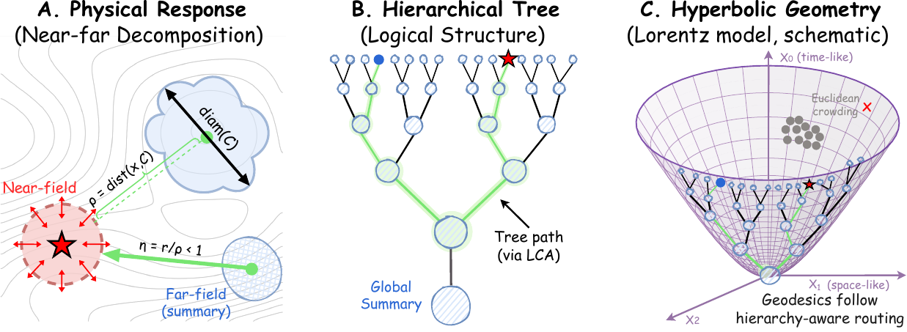
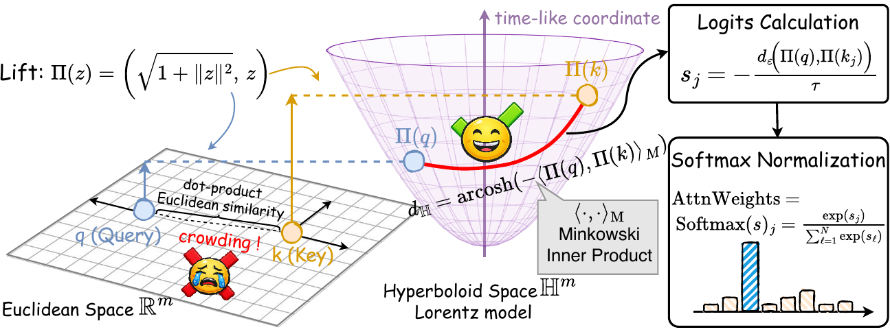
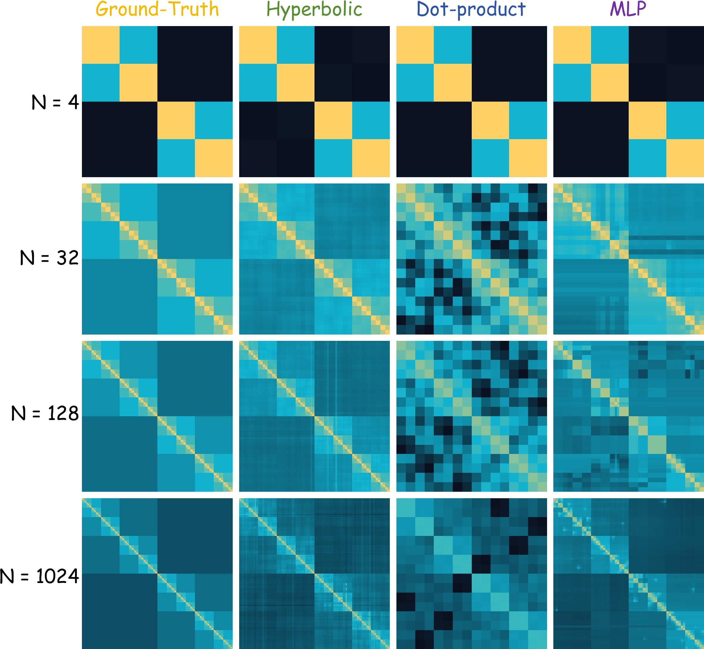
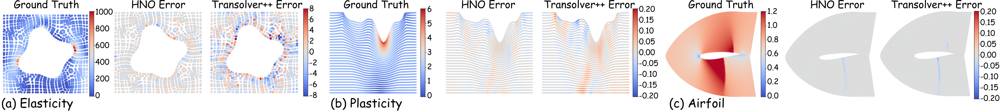
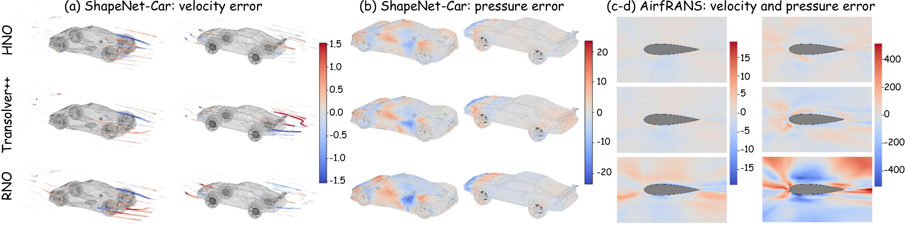
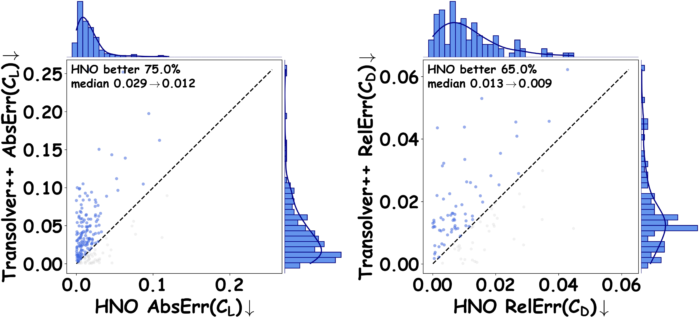
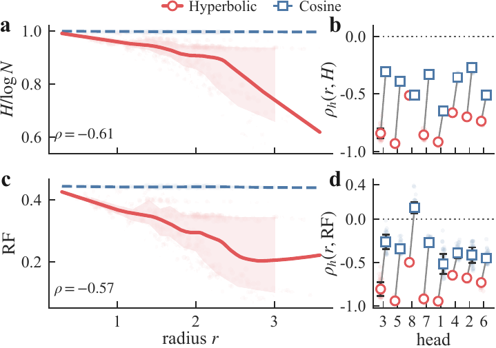

Near-far decomposition
Nearby interactions need fine precision, while distant regions are often compressible into lower-rank summaries.
ICML 2026 / Neural Operators for PDEs
Zhejiang University of Technology / Tongji University
HNO reframes neural operator learning as learning the physical approximation structure of fast solvers: resolve near fields directly, compress far fields hierarchically.
What We Learn
Classical neural operators are often described as learning a solution operator between function spaces. HNO shifts the emphasis: for PDE surrogate modeling, the key structure is the same one used by the Fast Multipole Method and hierarchical matrices.
Nearby interactions are kept detailed; distant interactions are routed through compressed summaries. Hyperbolic geometry gives this near-far approximation a continuous, learnable coordinate system.

Why Hyperbolic Geometry
Nearby interactions need fine precision, while distant regions are often compressible into lower-rank summaries.
Fast solvers exploit recursive hierarchies, but Euclidean space distorts exponentially branching structures.
HNO defines a stabilized Gibbs kernel from hyperbolic geodesic distances, giving attention an explicit scale coordinate.
Method
Query and key features are lifted to the Lorentz hyperboloid. Their stabilized geodesic distance is converted into attention weights, so the model learns a near-far routing kernel rather than an unrestricted Euclidean token mixer.

Toy Experiment
The controlled toy in the main paper uses graph diffusion on a complete binary tree. The target kernel is row-stochastic, with entries decaying with tree distance, so the problem exposes exactly the hierarchical near-far structure that FMM-style approximations exploit.

A signal on the leaves is diffused by a kernel whose weights decay with shortest-path distance on the tree.
Shared ancestors induce nested blocks: close leaves need strong local coupling, while far leaves are grouped into coarser summaries.
Dot-product attention misses the tree metric, while hyperbolic distance preserves the multiscale block structure expected from near-far physical approximation.
Results
HNO is evaluated against 19 neural operator baselines over point clouds, regular grids, and structured meshes.
| Benchmark | Geometry | HNO | Second best | Reduction |
|---|---|---|---|---|
| Elasticity | Point Cloud | 0.0037 | 0.0064 | 42.2% |
| Navier-Stokes | Regular Grid | 0.0676 | 0.0892 | 24.2% |
| Darcy | Regular Grid | 0.0045 | 0.0054 | 16.7% |
| Plasticity | Structured Mesh | 0.0009 | 0.0012 | 25.0% |
| Airfoil | Structured Mesh | 0.0048 | 0.0053 | 9.4% |
| Pipe | Structured Mesh | 0.0027 | 0.0042 | 35.7% |
Efficiency
On Darcy, HNO keeps the model compact and reduces the memory and latency burden relative to transformer-style operator baselines.
vs. 2.83M+ for compared transformer baselines
vs. 2.18 GB for Transolver and 6.07 GB for Transolver++
vs. 26.10 ms/b for Transolver on Darcy
Darcy Comparison

Large-Scale CFD
HNO is also evaluated on ShapeNet Car and AirfRANS, where cleaner residual patterns and improved coefficient prediction support the same hierarchy-aware routing behavior at industrial mesh scale.

Median absolute error: 0.029 to 0.012
Median relative error: 0.013 to 0.009

Mechanism
The learned hyperbolic radius is negatively correlated with attention entropy and receptive-field span: small-radius tokens aggregate globally, while large-radius tokens specialize locally.

Citation
Jieyuan Pei, Zhuoxuan Li, Wei Li, Haobo Zhang, Jiawei Jiang, and Jianwei Zheng. Zhejiang University of Technology and Tongji University. Correspondence: Jianwei Zheng.
@inproceedings{hno2026,
title = {Hyperbolic Neural Operator},
author = {Pei, Jieyuan and Li, Zhuoxuan and Li, Wei and Zhang, Haobo and Jiang, Jiawei and Zheng, Jianwei},
booktitle = {Proceedings of the 43rd International Conference on Machine Learning},
series = {Proceedings of Machine Learning Research},
publisher = {PMLR},
year = {2026},
url = {https://icml.cc/virtual/2026/poster/65554}
}